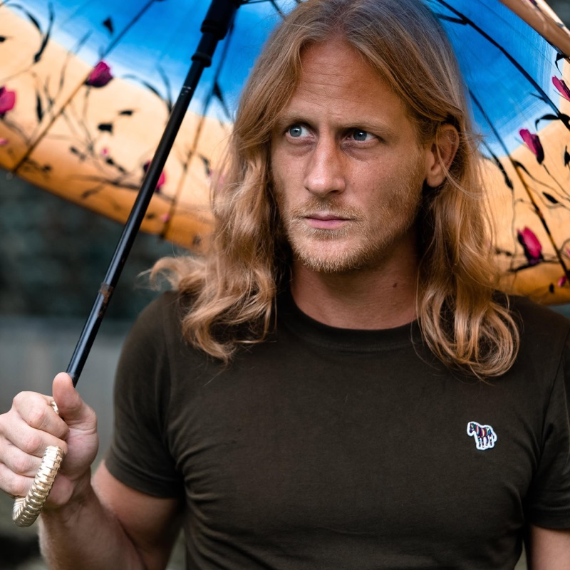

Maarten Rischen, 1985. Dutch, currently residing between Europe and SE Asia.
Read the essay →the whole argument, written by hand
Sideways, mostly. I'm a musician by training, an MA in Music from the University of Groningen, composing and recording and performing ever since, with crossover residencies at Banff Centre and Trinity College Dublin and a decade of journalism alongside all of it. Not the obvious runway for building an evidence atlas of human needs, and I'd rather be honest about that than dress it up.
What forced the turn was theatre. In 2024 I wrote and staged a musical production, Most Human Post-Human, at Adelaide Fringe, directed by Gavin Robins (King Kong on Broadway). I was writing music around one question, roughly what happens when technology moving this fast collides with an animal that hasn't been redesigned in two hundred thousand years, and at some point the question outgrew the show. It stopped being something I could answer with a song and started needing real evidence underneath it. After Adelaide I dropped everything else and went to build it.
I'm not a domain academic. The atlas is evidence-graded and sourced, but I don't expect you to take that on my word. I'm raising funds to bring in academic researchers and outside review to test it and carry its standing.